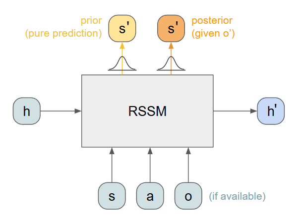
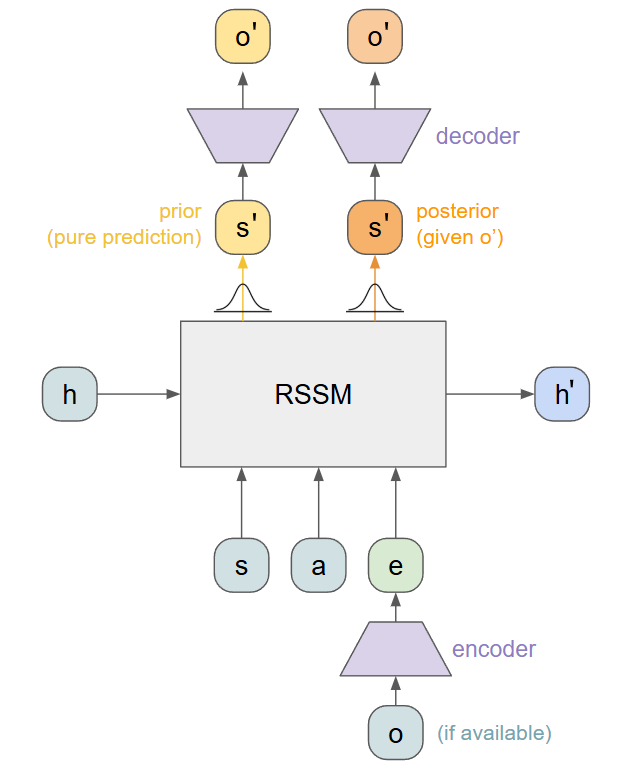
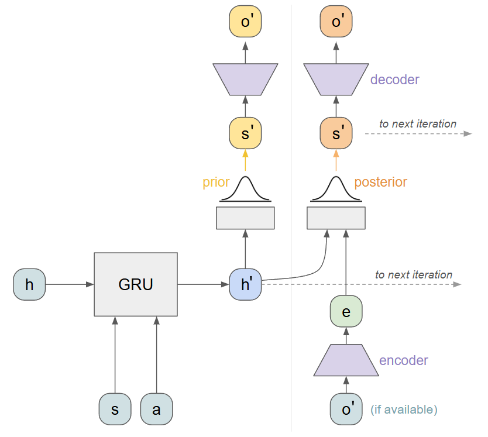
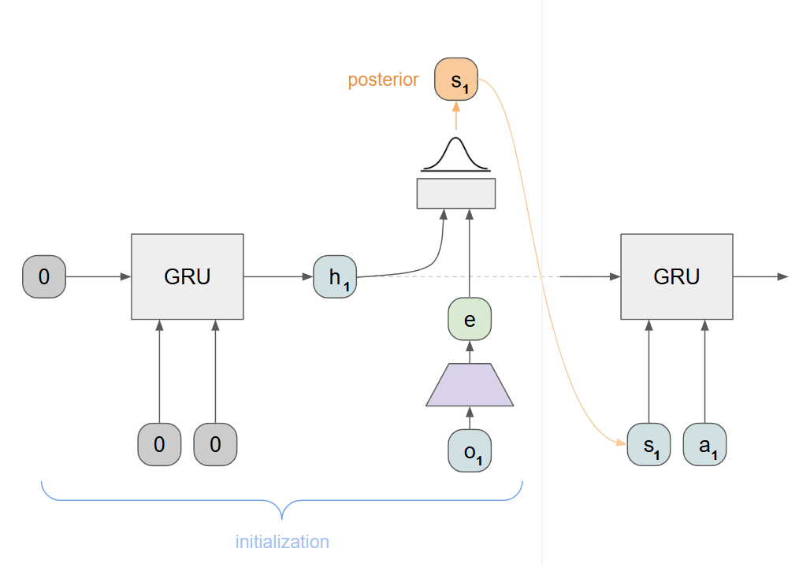
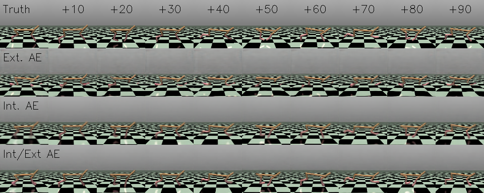
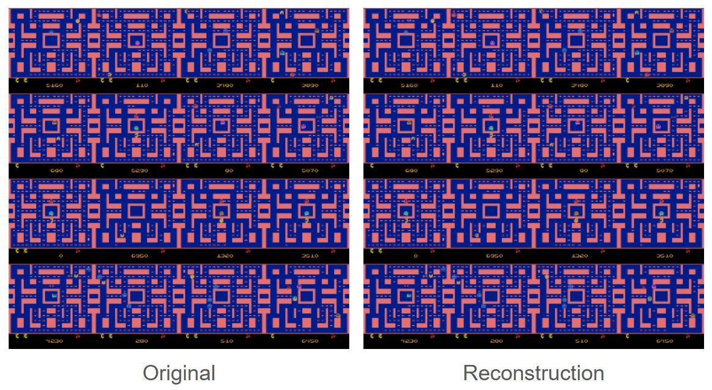
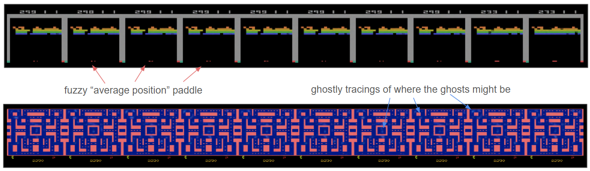
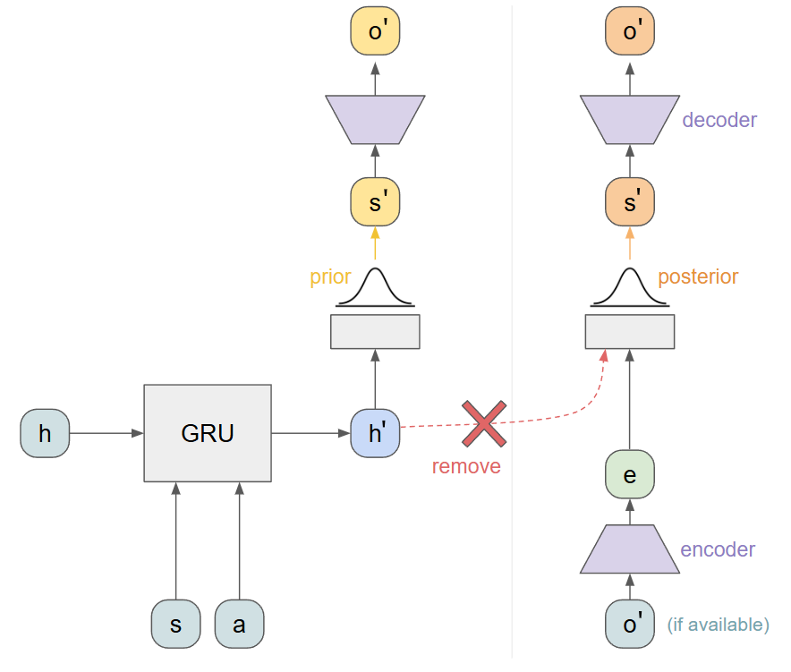
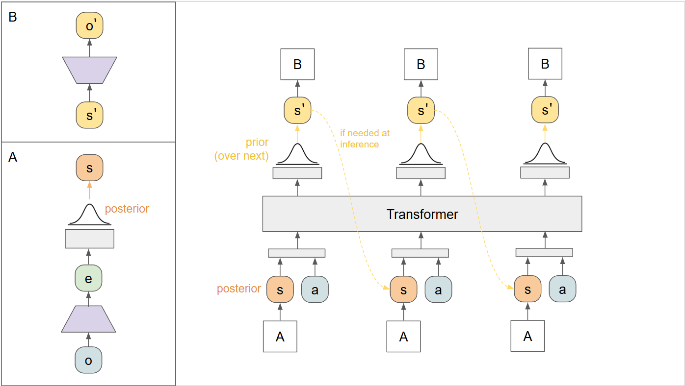
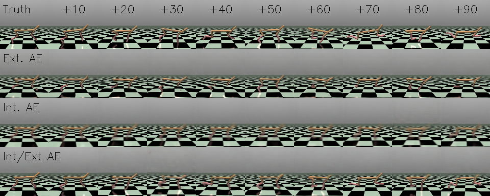

Modeling the World
RSSM & TSSM Notes and Experiments
Implementation here.
Why Model the World?
What is a world model? A world model is a neural network that captures the dynamics of an environment, which can then be queried to "simulate" the true environment without actually running it. There are some very clear practical advantages of having a world model, namely (1) it is differentiable and (2) it runs on the GPU, simulating batches of scenarios. This leads to tons of interesting things that you can do: you can train a policy by backpropagating through the world model, you can do search over possible future scenarios, or you can even just treat it like a really cheap version of a typical RL environment.
I am going to explore a lot of these in future posts, but for now I wanted to capture the inner workings of a specific world model: Recurrent State Space Models (RSSM, see this paper and this one), which I found a bit confusing to implement initially. Additionally, I did not find many explanations online besides some code, and I think some diagrams and written notes could be helpful for others.
In this post I am hoping to get through the following: (1) RSSM and how it works, (2) implementation and results on MuJoCo HalfCheetah, (3) some shortcomings of RSSM for imitation learning specifically, and (4) a look at the extension TSSM and other variations.
Diagram View: RSSM Architecture
Our goal in building a world model is essentially to build a sequence-modeling network that can take in observations and actions and predict what might come next. We can easily collect this data from an existing environment, and we want to distill this into a neural network. A world model can also include predicting rewards if they are available, but in this post I am assuming we do not have access to them.
The sequence models I am most familiar with are language models, and I expected this to pretty much map exactly onto something like text generation. Given an existing sequence of observations and actions, predict a distribution over the next possible observations, sample from this, and tack that on to our current trajectory. We could then query the policy for the next action, and repeat.
It turns out there is a bit more nuance here. While the above is somewhat correct, there are two big gotchas which add additional complexity:
We need to distinguish between the observation of the environment, the true state of the environment, and the representation of the true state within the sequence model.
We actually have multiple sources of information when predicting the future: we could query the model, but we could also observe the true environment if we have access to it.
Let's expand on each of these briefly, starting with the first: As is typical in RL setups, we may have an observation of the environment that is not the same as the full environment state. Here we also have some latent representation of the current state inside our RSSM, and the RSSM itself can roll forward entirely in latent space (image if we didn't do this and we used something like visual observations- the errors would compound quickly). We can "observe" the RSSM's state by transforming the latent state into a predicted observation, but this is not necessarily representative of the full long-term state of the environment or within the RSSM.
It is helpful here to name all of these things, and the RSSM authors really made things difficult by calling the part of the latent state s, which is already used in RL, so don't get confused by that:
o : the current observation from the environment
h : the current hidden state of the RSSM (as in any RNN). This is deterministic.
s : the current predicted latent state of the RSSM, which is calculated from a distribution conditioned on h. While h is deterministic, s introduces some stochasticity.
a : the current action
e : an embedding of the current observation (I will explain this below)
To the second point above, we can predict our current latent state s from two sources: we can predict it entirely from the dynamics of the environment, based on the most recent action. We can also take into account an observation of the current environment. This is where it is really important to distinguish between observations and states: our new observation may inform the current full state of the environment (which we are trying to model), but not be complete on its own. We may first process or compress the current observation into a embedded observation e, which is the last entry above.
Imagine we are driving a robot around that has a lidar and also maintains an RSSM that tries to capture the environment state. Beyond predicting things like robot position from the RSSM, we could also take in current lidar observations to assist the RSSM in maintaining a full representation of the larger map. Therefore it is perfectly allowed to use the observation at time step t to predict the state at time step t. This would be complete nonsense in a NLP problem: you can't use the fifth word in a sentence to predict the fifth word.
Taking this all together, we have a high-level picture of what we want to build:

Given a previous hidden state h, a previous latent state s, and an action a, we can predict a distribution over the next state, the s' prior. We can also compute the next hidden state, h'.
If we also have access to an observation o, we can compute a more accurate distribution for the next state, the s' posterior.
We can reconstruct observations from samples of the latent states by adding a decoding mechanism. Together with the encoder, we have a way to project in and out of a latent representation. Note this is not quite the same as an autoencoder (although it is really close): the encoding e is not necessarily the same as the latent state s.

The trickiest aspect here is the two possible outputs. Internally, we compute the prior from the new hidden state before we output it. The posterior is computed from the new hidden state and the encoded observation. All of this happens downstream of our recurrent portion, which only handles the deterministic hidden states h. This gives us our fully expanded model architecture:

Training an RSSM
To train this model we need example trajectories consisting of observations and actions. We will "roll" our model forward as in a typical RNN training loop, passing in the data from each timestep as well as the previous hidden vectors h and s. To encourage our model to reconstruct the correct observations, our posterior samples use a reconstruction objective on o'. In this way, the model to the right of the vertical line above almost acts like an autoencoder. An observation is first compressed into an encoding e, and is joined with a hidden state h'. These predict a distribution over latent states, and sampling from this objective and decoding should reconstruct the input o'.
The key to RSSM is that we also want the prior to predict this data: without access to o', we want to be able to predict it anyway. To encourage this behavior, we use a KL-Divergence loss between the two distributions. This encourages our prior to be as close as possible to the posterior, even though it has access to less information. Our loop looks something like the following:
RSSM Training Loop
Given: A sequence of (obs, action) pairs.
First, initialize the RSSM with zero-ed out hidden states and the first state (see below). Store initial h and s.
For (o, a, o') in the sequence, where o' is borrowed from the next entry:
Compute e = encode(o')
Pass through the RSSM(h, s, a, e) and get: h', prior, posterior
sample from the posterior to get s_post
Compute predictedonext = decode(s_post)
Loss 1: Reconstruction(predictedonext, o')
Loss 2: KLD(prior, post)
Sum up all losses and do a backwards pass all the way through this rollout.
To initialize the RSSM, we just supply zero vectors everywhere as well as a starting observation, collecting the resulting h and s vectors:

Encoder / Decoder Training
If you are using observations that are small (i.e. 1D vectors), you should be able to roll this out pretty far and train easily. In this case, the encoder and decoder are really just MLPs that map between the true observation space and the RSSM's latent representations.
Things get trickier if we have pixel observations (or something similarly large). Note that in this case, every step of the inner training for-loop includes an image reconstruction loss. This means that if you are rolling out for N steps, and have a batch size of B, you are doing B*N image-based losses, which gets expensive very quickly. For example, for 32 steps and batch size of 32, this involves 1024 image reconstruction losses in a single backward pass!
In attempting to resolve this expense I came up with three options to explore, although I am sure there are many others:
External Autoencoder: We could completely separate the high-dimensional representation by training an autoencoder, and then only show encoded observations to our RSSM.
Pro: Completely solves the compute issue. We can train an encoder separately and run the RSSM only in latent space. Feels very elegant.
Con: This detaches the prediction of full observations from the dynamics of the world model. Ideally, our model should predict observations based on the underlying recurrent states. However, if the autoencoder and RSSM are both really really good, and the RSSM predicts valid points in the encoder latent space, this might sorta just work.
Internal Autoencoder: We could also keep the encoder completely wrapped up inside the RSSM, which is expensive but more in line with what we are really trying to do: predict observations that result from the environment dynamics.
Pro: Only one model and predicted observations are directly computed from latent state.
Con: Besides expense, there is a really important subtlety here: An RSSM that can model the environment in the latent space does not necessarily mean it can reconstruct observations. The model in this case has two only-kind-of-related objectives: model the environment (entirely latent space), and reconstruct observations (mapping away from latent to real data). Good loss on the first objective does NOT guarantee good performance on the second. More on this later.
Internal Encoder, Updated Externally: Finally, we could still train an autoencoder externally, but include it inline with our RSSM. The RSSM still predicts full observations, but backpropagates through an encoder/decoder that is frozen from its perspective.
Pro: I think mostly fixes 2.2 above. The RSSM is encouraged to output observations that actually make sense after being decoded.
Con: Still expensive on the backwards pass, but perhaps not as expensive as 2.
The subtlety of 2.2 became really evident when trying to train an RSSM on Atari Breakout (examples below). In Breakout, the dynamics of the game are hugely dependent on the ball and paddle, which only occupy a few pixels each. This leads to an imbalance in our two objectives: When modeling the environment dynamics, these few pixels are extremely important. However, when reconstructing observations, they are not captured well by a reconstruction loss. We can very easily get degenerate predicted observations that just show most of the breakout blocks, getting an excellent reconstruction loss, and may or may not reflect the actual latent dynamics that the RSSM learns. In short- the visual features needed to model the environment and the visual features needed to reconstruct the environment do not match.
Because of this issue, I spent most of my time working with HalfCheetah-v4, which has large visuals tied to the dynamics and thus mostly avoids the problem. The visual features to understand the dynamics and to encode/decode the visuals are the same (the body of the cheetah).
RSSM Modeling HalfCheetah Trajectories
Trying all three approaches on HalfCheetah-v4, mimicking a SAC expert, it was very clear that approach 3 was the best. I kept a rolling buffer of about 50 demonstrations from the expert, each clipped to only 100 steps (because after 100 steps the agent leaves the "playing area" in MuJoCo and this is a jarring visual change). I trained on batches of 8 subtrajectories, clipped to segments of 20 steps. The model was trained for 20,000 batches.
After training, we can test the model by collecting an expert trajectory and running the data through the RSSM. At some point, we can stop feeding the observations to the RSSM and rely only on the predictions from the prior distribution. Here we see the results of feeding the first 10 observations to the RSSM during rollout, and relying on predictions for the remaining 90:

The results were surprising to me in a few ways: I expected degradation of the model over time, but that is not really what happened. Instead, it appears that all approaches probably captured the dynamics, and the main difference is in how well they could reconstruct observations. Remember, the dynamics are entirely latent so a poor reconstruction on step n does not necessarily compound when reconstructing n+1.
The fidelity of the reconstructions was mostly constant. The fully external encoder captured the body of the cheetah but the legs very well, even from the beginning. The internal encoder did a better job but the resulting observations are a little blurry. This is due to the issues described above- just because it understands the dynamics doesn't mean the reconstructed observations are crisp. This is mostly resolved in the last approach, which has a dedicated external training loop to produce nice output images, and propagates through this internally.
In the future I may have to see how long I can run this out in latent space before it degrades, because the last approach seems to full understand how the environment works even after 90 steps with no observations.
These can also be visualized in a video, which is more fun:
RSSM Modeling Atari Trajectories
I also attempted training on demonstrations from Atari (Breakout and PacMan), which proved very educational as I tried to understand why it failed so miserably. An autoencoder on its own can definitely compress and reconstruct frames from Atari games:

However, when adding in the RSSM in any of the above combinations, I could not overcome the fact that the important features in these two games are just really really small and not well-captured by reconstruction loss. In the best case I would get something like the following:

There are several ways that this could be fixed. In an environment with access to reward, the RSSM would also predict this reward and therefore could be more inclined to pay attention to things that influence reward, like the paddle, ball, or ghosts.
Additionally, more complex losses could probably solve this problem. An adversarial loss would enforce the inclusion of the small details that would otherwise give away that these are reconstructions. We could also imagine something like a diffusion head that generates plausible observations from the current latent state and some noise vector. For example, diffusion might refine the "ghostly tracings" above into actual ghosts over the course of generation. In both cases the idea is to encourage the outputs to be within the distribution of possible observations, which is not currently a constraint on the model.
TSSM
Finally, while exploring RSSM I came across many more recent works, and one that stood out was TSSM: the transformer-equivalent of RSSM. RSSM cannot be immediately converted to a transformer because of our dual output: the prior and posterior distributions. To compute the prior, we need to pass in a sequence of latent states, which we could sample from the posterior. So somehow, we need to sample the posterior before we pass through the model (?).
Obviously, this doesn't work. The TSSM authors solve this conundrum by separating the prior and posterior into two independent graphs. This is actually a simplification of RSSM: we can remove the link between the hidden state and the posterior:

This means that the posterior is now entirely dependent on the current observation, and not any hidden dynamics. I am not sure this is a fair assumption in all environments, but probably safe in many of them. Now we can do the following:
Encode all observations in our sequence
From each encoded observation, compute a posterior distribution and sample s
Now we have a sequence of (s,a) pairs, where s is the latent representation of the state sampled from the posterior.
Feed this whole sequence through the transformer in one pass to estimate the prior distributions
Apply our two losses at each output: the prior should be aligned via KLD with the next posterior, and the decoded observations should match the next observations.
In diagram form, we have something like this:

The results are quite similar to RSSM, and we can again test multiple ways of training or including the conversion to and from pixel space:

What's Next
I looked into these methods because they can be used to support training policies, which I will describe in future posts. There are also some really impressive works lately that take these ideas to an extreme, modeling complex environments (i.e. DIAMOND). I think it is likely that these models become the norm when training policies if they can continue increasing in fidelity. There are simply too many benefits to ignore: a fully differentiable environment that is easily batched and parallelized, and can be rewound to prior states for searching. I am curious if these will eventually replace simulators all together, at least with a considerable computational burden. Don't sell NVDA anytime soon.
Recent Posts:
MuJoCo CycleGAN
(Mis)Adventures in Style Transfer, Part 1
January 27, 2025
Flowing with Fewer Steps
Shortcut Models Notes and Review
December 12, 2024
Going with the Flow
Notes on Flow Matching (Policies)
December 9, 2024
More Posts